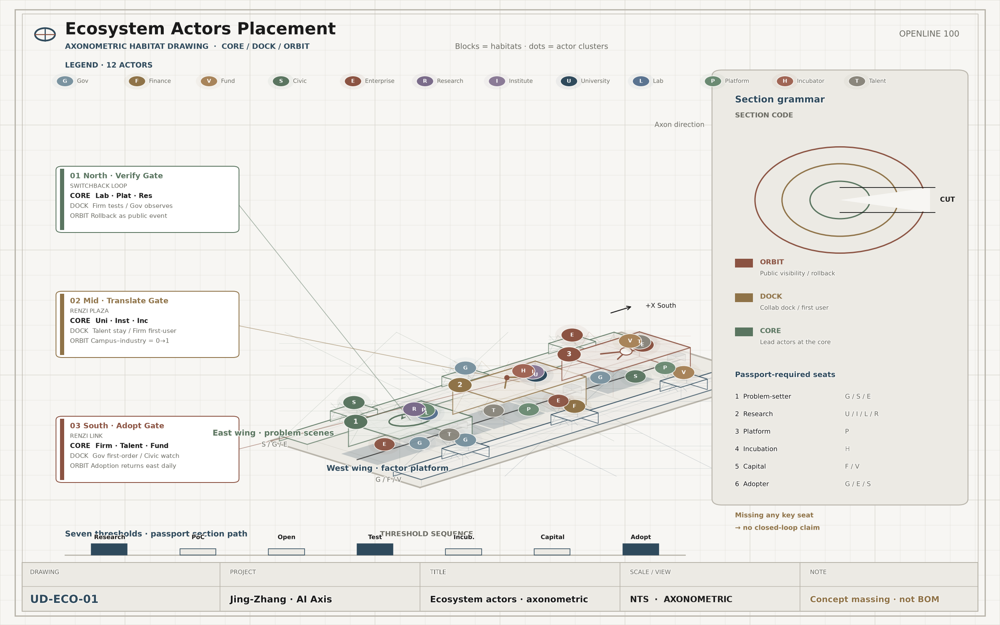
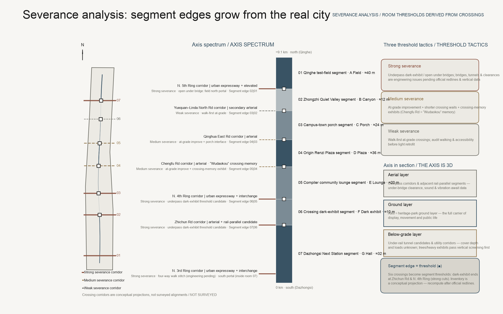
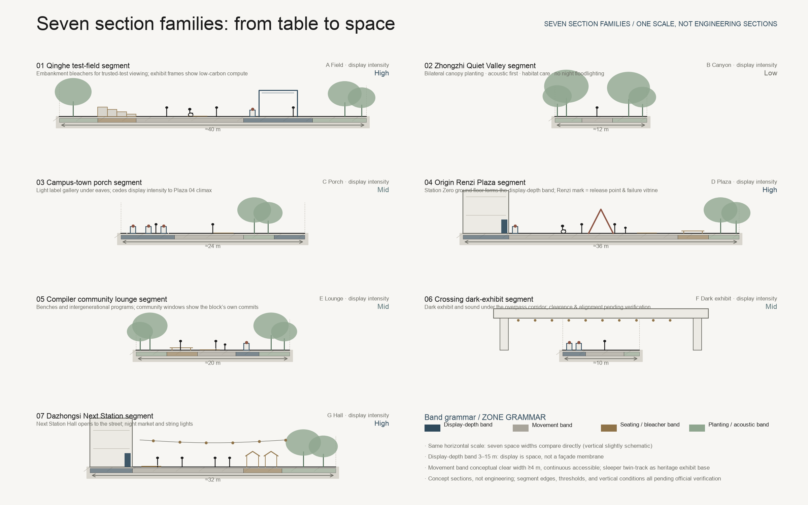
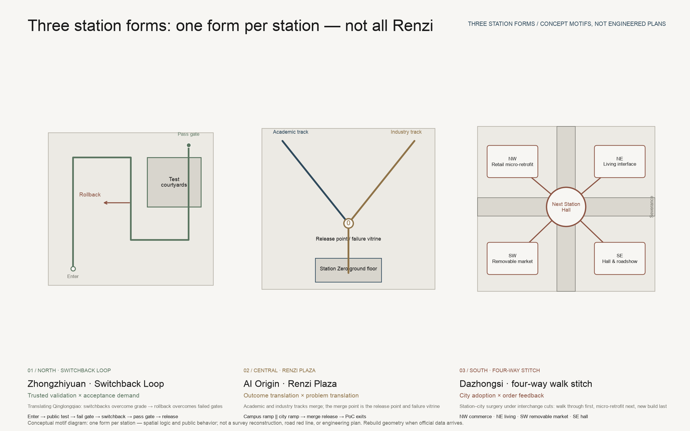
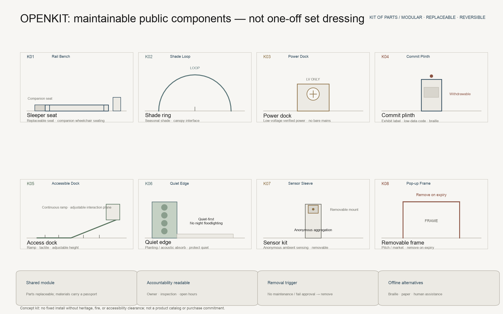

A Century of Jing-Zhang · AI Intelligence Axis｜OPENLINE 100
A Century of Jing-Zhang · AI Intelligence Axis—here research is tested, translated, and adopted—and seen throughout.
A Century of Jing-Zhang. The Next Century of Public Intelligence Is Co-Created Here.
In 1909, the Jing-Zhang Railway proved that Chinese people could independently survey, design, construct, and manage a trunk line; today, Haidian must prove more than that it can “train models”—it must prove it can connect research, code, capital, institutions, and an ordinary person’s day. [source:JZ-HISTORY] Railways once connected places; co-creation now connects minds. This proposal’s core idea is a single sentence: turn the Jing-Zhang Railway Heritage Park into the innovation chain’s public display layer—where research outcomes are tested (Zhongzhiyuan Trusted Testing at the North Station), translated (Origin Station Zero, from 0 to 1), and adopted (Dazhongsi enters urban everyday life and markets); being seen is the continuous public display layer along the axis—display must serve testing, and must never pass “already displayed” off as “already validated.” The display layer is therefore not a shop window, but a public “city compiler”: research leaves closed campuses for public validation; urban problems become projects in an auditable way; contributors are seen, and retain the right to withdraw and correct.
The scheme uses a dual naming method: the Chinese spatial-structure term is the Jing-Zhang Intelligence Axis (京张智轴)—an axis means sequence, anchors, and ritual, the spatial skeleton of seven spaces, three engines, five landmarks, and three station forms; the international mechanism brand is OPENLINE 100 / Jing-Zhang Open Intelligence Line—OPEN means open source, open scenarios, and open city; LINE means the railway heritage line, the innovation chain, and the public-life line; 100 both salutes a century of Jing-Zhang and treats every proposal as a version that can keep iterating. Space speaks of memorial and sequence; mechanism speaks of openness and flow—each layer in its place. The core spatial structure is one axis, two wings; three engines, seven spaces; three stations, three forms; the core institutional structure is the seven-gate chain of research—rights/PoC—open source—test validation—incubation—capital—city adoption. [metric:axis_segment_count] [metric:renzi_motif_count]

Design Basis and Source Inventory
This package is governed primarily by the public call announcement and the agent-facing task book, with the repository’s site package, source registry, and fact pack as the machine-readable base. [source:OFFICIAL-ANNOUNCEMENT] [source:AGENT-TASKBOOK] [source:SITE-PACKAGE] [source:SOURCE-REGISTRY] [source:PROCESSED-FACT-PACK] Corresponding standards are [standard:PROJECT-OFFICIAL-ANNOUNCEMENT], [standard:PROJECT-AGENT-OPEN-CALL-TASKBOOK], [standard:MOHURD-URBAN-DESIGN-MEASURES], [standard:MOHURD-CONTROL-DETAILED-PLANNING], [standard:MNR-LAND-USE-CLASSIFICATION-GUIDE], [standard:MOHURD-ARCH-DESIGN-DEPTH-2016]; existing-conditions diagnosis is managed by [depth:existing_conditions_diagnosis].
The most important data discipline is “do not draw gaps as facts.” The repository currently has no official overall boundary suitable for precise design, no surveyed polygons for the three key areas, no control-plan intensity, existing buildings, tenure, road red lines, municipal utilities, rail entrances/exits, or complete heritage control lines. Therefore [data:geometry/site_boundary.geojson#SITE-001] and [data:geometry/key_areas.geojson#PROV-KEY-001] are repository provisional constraints only, [source:BOUNDARY-SOURCE] [source:KEY-AREA-SOURCE]; this package uses them for topological validation and conceptual expression, and every derived quantity is marked provisional-derived. The announcement’s roughly 43.6 km² coordinated research scope, roughly 11.4 km² overall design scope, and roughly 368.4 ha total key-area quantity are task calibers and are not replaced by this package’s provisional polygons.
Public background materials only provide “direction calibration,” not proof of site existing conditions. Haidian’s 2025 district statistics show a resident population of 3.111 million, regional GDP of RMB 1,369.14 billion, tertiary industry at 92.56%, 92 national key laboratories, 123 filed and online large models, and 1,568 financial institutions (all 2025 figures are preliminary); these only show that Haidian has district-level conditions for research–industry–finance coupling, and cannot be area-scaled down to this scope. [source:HAIDIAN-STATS-2025] Information-software enterprises and employment in the economic census also cannot be equated with AI enterprises and AI employment. [source:HAIDIAN-ECON-CENSUS-2023] Beijing R&D expenditure figures are city-level reference only. [source:BEIJING-RD-2024]
Jing-Zhang Park Phase I opened in 2023 at about 2.5 km and 16.8 ha, supporting the background judgment of “heritage protection and public space in equal measure,” but does not provide the full-line engineering boundary. [source:JZ-PARK-OFFICIAL] The Tsinghuayuan Station historic site has a legally published protection zone and construction control belt; because this package has not obtained cleared surveyed polygons, it does not digitize a “pseudo purple line”; any adjacent node must be located only after heritage review. [source:QINGHUAYUAN-HERITAGE] This boundary-and-missing-data governance is also written into [assumption:A-BOUNDARY-001], [assumption:A-CONTROLS-001], [assumption:A-HERITAGE-001].
Three-Tier Scope Working Framework
The three tiers are not three unrelated maps, but a large-to-small spatial progression threaded by one coordination spine: the strategic tier asks the question and the combination; the overall tier asks spatial supply; the key areas ask the next gate. [depth:three_level_scope_framework]
The ~43.6 km² coordinated research tier answers “why Haidian, why here”: organizing universities and institutes, research platforms, enterprises, capital, hospitals, schools, communities, and international networks into an open innovation commons. It outputs the seven-gate ecological chain, global case translation, activity networks, and “three districts, two wings” coordination logic—it does not generate pseudo-precise parcel conclusions.
The ~11.4 km² overall design tier answers “how the city carries it”: with OPENLINE as the public main axis, linking the northern Zhongzhiyuan full-stack autonomous innovation engine, the central Origin outcomes-translation engine, and the southern Dazhongsi city-adoption engine; the west connects Zhongguancun science & technology services, IP, and capital; the east connects Xiaoyuehe living scenes, communities, and cultural facilities. The provisional polygon recalculates to 11.41 km², used only for consistency checks of layers and metrics in this submission. [metric:site_area_sqm]
The three key-area tier answers “where the first step happens”: Zhongzhiyuan does trusted validation; Origin does outcomes translation; Dazhongsi does city adoption—each of the three stations has a supply gate and a demand gate; demand parties are not absent. The Xiaoyuehe east wing is the master demand intake; the three stations are three landing points for demand on the chain. The three provisional constraints are [data:geometry/key_areas.geojson#PROV-KEY-001], [data:geometry/key_areas.geojson#PROV-KEY-002], [data:geometry/key_areas.geojson#PROV-KEY-003], count [metric:key_area_count]; geometry does not replace announcement areas or statutory boundaries.
All three tiers share one “project passport”: every research or city problem has a unified ID, technology readiness, IP/open-source choice, data legality, test records, carbon and public value, financing status, and city procurement status. The strategic tier watches combinations; the overall tier watches spatial supply; key areas watch the next gate. When official boundaries arrive, replace constraints and recalculate as a whole; only when control plans, municipal systems, and tenure are in place does the work enter professional schemes and approvals. [data:geometry/constraints.geojson#official-controls-not-available]

Coordinated Research Scope: Industry and Future City Studies
From Lab to City Order: The Seven-Gate Open Innovation Chain
- Research｜Basic research: Universities and national labs propose principle breakthroughs; OPENLINE Fellows lower disciplinary barriers through public forums and cross-campus pairing. Outputs are papers, benchmarks, and risk statements—paper count is not the sole KPI.
- PoC & IP｜Proof of concept and rights clearing: The central “Station Zero” provides engineering managers, IP, ethics, and clinical/education/public-service advisors; reversible choices among open source, patents, and trade secrets. The gate is demand-side signature and a minimum viable validation plan.
- Open Source｜Open collaboration: Establish a city-scale repository, maintainer microgrants, model cards/data cards, and contributor agreements. Open source is not unconditional open data—it means code, docs, interfaces, and governance are auditable.
- Validation｜Trusted testing: The northern Agent Garden provides red-team, energy, accessibility, bias, and real-task testing; high-risk domains keep humans responsible. Fail thresholds trigger rollback—never pass “already displayed” off as “already validated.”
- Incubation｜Industry incubation: Origin community supports teams with divisible small units, shared equipment, and 12-week product sprints; exit criteria are a clear customer, compliance path, and unit economics—or timely stop.
- Capital｜Patient capital: The west-wing “Capital Platform” combines PoC vouchers, first scene orders, IP pledge advisory, industry capital, and long-term funds; each tranche binds to the next milestone—no park rental-subsidy race.
- City Adoption｜City adoption: Hospitals, schools, commerce, and city operators become first problem owners. Before adoption, publish impact assessment, pilot scope, appeal and exit mechanisms; reuse successful interfaces and procurement clauses, not personal data copies.
The seven-gate chain forms a loop: city problems enter as City Pull Requests; research teams respond; test results enter a public “commit log”; first orders and investment help scale; real use generates the next round of problems. The project passport runs the full chain so teams do not keep re-filling forms across incubators, hospitals, funds, and government. [metric:scenario_count] [metric:test_validation_scenario_count]
Innovation Ecosystem Actor Placement: Twelve Actor Types, Not Three Parks
Industry–academia–research fusion is expanded here into an open innovation commons of government—capital—society—enterprise—research—education—platform—incubation—talent. The twelve actor types—government agencies, capital & finance, funds, social organizations, enterprises, research institutions, research academies/institutes, higher education, laboratories, innovation platforms, tech incubators, and high-end talent—must be spatially placeable, chain-pairable, and passport-auditable—not merely circles on an ecosystem diagram.
The placement rule is one axis, three gates + two-wing supply + micro-nodes along the line: the west-wing factor platform receives government services, capital & finance, and funds; the North Station validation gate receives labs, innovation platforms, and enterprises submitting for test; the Central Station translation gate receives universities, institutes, incubators, and talent; the South Station adoption gate receives enterprise markets and international roadshows; the east-wing problem wing receives social organizations and real city scenes; micro-nodes every 600–900 m provide everyday encounter interfaces. The project passport mandatorily registers problem owner → translator → professional service → tester → incubation/capital → feedback party; if any key seat is absent, do not claim an ecological closed loop. Capital seats activate only after trusted testing is passed. The figure below is conceptual placement, not existing occupancy or contracts.

Seven Global Cases: Do Not Copy Buildings—Translate Mechanisms
- Boston / Kendall—The Engine: Organizes technology, IP, market, and financing readiness into a “blueprint”; Haidian translates this as on-site engineering managers and stage gates—not desks alone. [source:CASE-KENDALL]
- Toronto / MaRS: Adjacent to universities and hospitals, aggregating labs, startups, and capital services in one center; Haidian translates this as medical first users, a public atrium, and a unified project passport—without copying institutional governance. [source:CASE-TORONTO]
- Paris-Saclay: Links PoC, technology maturation, prototyping, incubation, and seed capital; Haidian adds an OPENLINE oriented to the public and city orders. [source:CASE-PARIS]
- Singapore / AI Singapore 100 Experiments: Real problem owners, engineering teams, and project managers deliver together; Haidian forms “100 City Pull Requests,” with all data and procurement following separate procedures. [source:CASE-SINGAPORE]
- Helsinki / Maria 01: Converts a former hospital into a startup community, retaining most old buildings and expanding in phases; Haidian adopts heritage-friendly renewal of “operate first, light retrofit next, build last.” [source:CASE-HELSINKI]
- Seoul AI Hub: City-established, jointly operated with universities and national research institutes as multi-node R&D infrastructure, incubation, and international collaboration; Haidian adds open microgrants and public-value thresholds so resources do not flow only to leading firms. [source:CASE-SEOUL]
- Tsukuba: Industry–academia–government–finance alliance, urban living labs, and social implementation; Haidian uses linear public space to remedy the common science-city pattern of “strong institutions, weak streets.” [source:CASE-TSUKUBA]
The shared lesson: a world-class innovation ecosystem is not one landmark, but strong research sources + a neutral translation layer + real first users + layered capital + rules that can be trusted. Haidian’s distinctive increment is joining Zhongguancun’s technical density with a century of railway public narrative on one walkable, experiential, contributable line. [metric:global_case_count]
Three Positionings, Five Functions, and the “Three Districts, Two Wings” Coordination Loop
OPENLINE 100 responds item by item to the task book’s original names. The three positionings are: a Century Jing-Zhang Cultural Belt that preserves and reinterprets engineering spirit through Rail→Code→Commons; an Urban AI Life Experience Belt that brings healthcare, education, commerce, mobility, culture, and governance into an ordinary day; and an AI Fusion Innovation Belt that joins research, open source, testing, incubation, capital, and adoption into one. The five functions are: Zhongzhiyuan carries the AI full-stack autonomous innovation system; Origin community organizes a world-class AI innovation ecosystem; twelve corridor scenarios form an AI+ scenario empowerment new paradigm; Xiaoyuehe and neighborhood interfaces carry an intelligent AI vitality city; and public testing, model cards, appeals, and exit mechanisms together pursue AI governance global discourse power. [source:AGENT-TASKBOOK]
Three districts, two wings are not five islands: the Zhongzhiyuan AI autonomous innovation acceleration district pushes projects through the trusted-testing gate; the AI Origin community completes PoC, rights clearing, open source, and incubation; the Dazhongsi AI industry agglomeration district completes city adoption and order feedback. The Zhongguancun science & technology services wing provides IP, engineering managers, and global factor services, and connects patient capital after testing is passed; the Xiaoyuehe scenario empowerment wing is the master demand intake—sending community, public-service, and real city problems into City Pull Requests, then landing them at each station’s demand gate. The coordination spine is problem → translation → professional service → trusted testing → incubation/patient capital → feedback: Xiaoyuehe raises problems → Origin teams translate (demand gate: problem translation) → Zhongguancun wing supplies professional services (engineering/IP/ethics; capital does not enter early) → Zhongzhiyuan trusted testing (demand gate: acceptance criteria; fail the gate and do not enter incubation) → after the gate, incubation and patient capital → Dazhongsi use and operations feedback write back to the passport and problem pool (demand gate: orders and feedback). Every step writes back to the same project passport.
Regional coordination uses a proposed “five places, one protocol,” without inventing existing partnerships: exchange community problems, maintainers, and light prototypes with Bewei Community; establish joint PoC interfaces for frontier outcomes with Future Science City; establish public translation of scientific outcomes and interdisciplinary residencies with Huairou Science City; connect robotics, smart terminals, and other engineering/manufacturing validation with Beijing E-Town; and build a portable library of city problems, evaluation, and procurement clauses for the Beijing–Tianjin–Hebei region. The annual Lab-to-City Forum only publishes a shared problem list, mutually recognized test templates, and next-year owners; any cooperation must be separately confirmed by the relevant institutions and cannot be inferred as already signed from scheme text.
Naming and Visual Standards: Make the Brand a Wayfinding Protocol
The mark forms the letter O from two parallel rails, with an umber “commit line” through the midpoint forming 1; at small sizes keep only the O/1 structure—no complex gradients or figurative robots. Primary color Rail Ink #1A1A1A marks industrial skeleton and ink hierarchy; Axis Steel #2F4A5C marks structural axes and public interfaces; Signal Umber #8B5342 marks only events and interactive nodes; Ballast Paper #F7F6F3 keeps the quiet paper feel of architectural drawings. Naming follows the dual rule: drawings and spatial structure use Chinese “Jing-Zhang Intelligence Axis (京张智轴)” (paragraphs called “Space,” the sequence called “Intelligence Axis Seven Spaces”); platform, passport, and event mechanism layers use “OPENLINE 100”; nodes use “Station,” projects use “Commit,” annual outcomes use “Release,” and milestone language pairs Suzhou numerals with Arabic numerals [metric:milestone_count] [assumption:A-MOTIF-001]. Wayfinding must be bilingual Chinese–English, high-contrast, tactile, and non-digital alternatives; before formal use, complete trademark, domain, typeface, and Suzhou-numeral historical rights clearance. [assumption:A-BRAND-001] [assumption:A-ACCESS-001]
Overall Design Scope: Urban Renewal and Control-Plan-Depth Urban Design
The overall structure is one axis, two wings; three engines, seven spaces; three stations, three forms; nine stitching interfaces. [depth:overall_spatial_structure] The Jing-Zhang Intelligence Axis is not claimed as the engineering centerline of the heritage line; it is a conceptual public main axis generated inside the provisional boundary [data:geometry/roads.geojson#ROAD-OPENLINE]. At three speeds—developer walking, commute cycling, and accessible roaming—it joins research, living, commerce, parks, and culture into everyday life, not festival days alone.
The Intelligence Axis Is Not a Corridor—It Is a Sequence of Seven Spaces
An axis of about nine kilometers, if equal width everywhere, is only a through corridor; the Intelligence Axis is designed as a sequence of seven named segments (spaces), each with its own width, section family, and dominant public behavior—the rhythm of compression and release is itself the design [metric:axis_segment_count] [data:geometry/public_space.geojson#PUBLIC-AXIS-SEG-01]. From north to south:
| Space | Segment name | Section family | Conceptual width | Dominant public behavior | Display intensity |
|---|---|---|---|---|---|
| 01 | Qinghe Testing Exhibition Field | A Exhibition Field | ~40 m | Public viewing of trusted testing and low-carbon compute exhibition/education | High |
| 02 | Zhongzhi Quiet Valley | B Canyon | ~12 m | Quiet R&D, habitat conservation, and acoustic protection | Low |
| 03 | Academic Town Porch | C Porch | ~24 m | Campus gate interfaces and light exhibition-sign galleries | Medium |
| 04 | Origin Renzi Plaza | D Plaza | ~36 m | Station Zero releases, Renzi Plaza, and Failure Cabinet | High |
| 05 | Compiler Yard Community Living Room | E Living Room | ~20 m | Community co-creation, garden rooms, and intergenerational activity | Medium |
| 06 | Crossing Under-Exhibit | F Under-Exhibit | ~10 m | Under-crossing dark exhibits and sound installations | Medium |
| 07 | Dazhongsi Next Station | G Concourse | ~32 m | International roadshows, markets, and nightlife | High |
High and quiet segments alternate: the north exhibition field and central plaza each hold a primary climax; the Academic Town Porch drops to medium-intensity interface so continuous high display from 03–04 does not drown the middle; the axis can carry OPENLINE Week’s tens-of-thousands flow and still protect a researcher’s quiet weekday morning walk. Segment boundaries and sections do not stop at the table: below answers first “why the boundaries fall here” (severance analysis), then “what each segment looks like inside” (section-family deepening).
Where Segment Boundaries Come From: Severance Analysis, Not Arbitrary Division
An axis of about nine kilometers is first a line cut laterally by the city. This scheme begins with severance analysis: register seven east–west crossing corridors [metric:severance_crossing_count], grade them strong (expressway, elevated, rail-parallel candidates), medium (arterials), and weak (secondary roads), then use six of them as “thresholds” between spaces—the low, dark F Under-Exhibit segment is bounded at both ends by the strong severance corridors of Zhichun Road and North 4th Ring; Chengfu Road and Tsinghua East Road define the north and south gates of Origin Renzi Plaza (Chengfu Road is the “Wudaokou” crossing memory point); the under-bridge space at North 5th Ring is the north portal between Quiet Valley and Qinghe Exhibition Field; the North 3rd Ring corridor is the south portal of the Concourse segment. Segment boundaries are therefore not the designer’s arbitrary rhythm, but redesign upon “the necessity of being cut.” Conceptual mouth strategies are three-tiered: strong severance corridors prioritize underpass under-exhibits and opening under bridges; medium corridors do at-grade improvement and crossing-memory exhibit points; weak corridors use pedestrian-priority at-grade treatment and walk audits first. Names take publicly common road names; positions are conceptual projections relative to provisional key-area centroids; grades and mouth methods all await official red-line verification and do not constitute bridge/tunnel engineering conclusions. [assumption:A-SEVERANCE-001]

Axis section: this axis is three-dimensional. Along the Intelligence Axis, three types of vertical stacking may coexist—underpass railway tunnel candidates, overpass elevated corridors, and adjacent rail-parallel segments; cover depth, structural loads, under-bridge clearance, and acoustic conditions are not yet in the repository. From this the scheme makes two conservative vertical design agreements: first, placement of trees, heavy exhibit furniture, and any fixed structures must pass vertical-condition screening at the deepening stage; second, both sides of strong severance corridors preferentially receive low-sensitivity section families (canyon, under-exhibit), leaving the highest acoustic cost to functions that least need quiet. [assumption:A-SEVERANCE-001] [assumption:A-AXIS-001]
Section-Family Deepening: Seven Conceptual Sections, One Strip Grammar
The seven section families are drawn as conceptual sections at the same horizontal scale, so width rhythm can be compared directly [data:geometry/public_space.geojson#PUBLIC-AXIS-SEG-01]. Each family is composed of four strip types as a checkable grammar: display depth strip (3–15 m; display is space, not a membrane stuck on a façade), circulation strip (conceptual clear width not less than 4 m and continuous accessibility throughout), seating/bleacher strip, and planting/sound-absorbing strip; heritage elements (ties, twin rails, platform edges) embed directly into the strips as exhibit stages rather than separate furniture. Each of the seven families has its own composition logic: A Exhibition Field uses embankment bleachers facing a watchable test field; B Canyon uses bilateral closed canopy planting to protect quiet and habitat; C Porch places exhibition-sign galleries under eaves as an all-weather interface; D Plaza uses Station Zero’s ground floor directly as the display depth strip, with the Renzi mark anchoring the release point; E Living Room uses long benches and community exhibit windows for intergenerational activity; F Under-Exhibit uses under-overpass corridor space for sound installations (clearance and alignment to be verified); G Concourse faces night with market stalls and string lights. Sections are conceptual, not engineering; longitudinal scale is slightly schematic; segment boundaries, mouths, and vertical conditions all await official data verification. [assumption:A-AXIS-001]

Three-Level Grammar of the Public Display Layer
The “display layer” is this scheme’s core idea, so display must be a checkable spatial grammar, not an accidental set of five point landmarks. The grammar has three levels: line—continuous display interfaces along high-intensity Intelligence Axis segments (exhibition signs, Commit interfaces, enterable ground floors), with bilateral conceptual length recalculated by [metric:display_frontage_length_m]; plane—indoor/outdoor exhibition fields at the three stations (Agent Garden, Station Zero, Next Station Hall); point—OPENKIT’s K04 Commit Plinth and Suzhou-numeral milestones [metric:milestone_count]. Design guidelines suggest a “display frontage ratio” (length of ground-floor display interface as a share of total ground-floor frontage along the line) of 40%–60% as a target range for high-display segments—this number is a guideline suggestion for parcel deepening, not a statutory indicator. Display carriers preferentially use heritage elements themselves: platform remnants as stages, switches as interactive nodes, embankment edges as seating bleachers; contributors retain withdrawal and correction rights over any displayed content.
Mapping the Two Wings: The Axis’s Value Is Lateral Stitching
The Zhongguancun science & technology services wing (west) and the Xiaoyuehe scenario empowerment wing (east) no longer live only in text: nine east–west stitching interfaces are graded as “three strategic stitches + six everyday stitches” [metric:strategic_interface_count] [data:geometry/roads.geojson#ROAD-X-01], each labeled with what it stitches. The three strategic stitches are—Qinghe blue–green stitch (north, where axis and river intertwine), Origin campus–city stitch (center, college gate district and knowledge capillaries), Dazhongsi four-way walk stitch (south, rail-candidate interfaces and the pedestrian surgery of interchange reality); the six everyday stitches connect Jimen community, Xiaoyuehe east wing, Compiler Yard living room, Zhongguancun service wing, Academic Town Porch, and Zhongzhiyuan openings. Strategic stitches should receive conceptual plans and accessible circulation design at deepening; everyday stitches begin with walk audits. Without official red lines and station-entrance data, all interfaces express connection priority only. [assumption:A-TRANSIT-001]
Conceptual land use uses topologically complete zoning [data:geometry/land_use.geojson#LU-001]: AI R&D and translation (0802) near the three engines; education & research (0804) as near-campus interfaces; medical innovation (0806) for low-risk validation; science & technology services and urban commerce (05) at stitch nodes; cultural display (0803) along the heritage narrative; talent living (0701) and public services (0702) sustaining day–night mix; park green space (1401) as continuous public base. Its role is to compare functional ratios and adjacency—not to change statutory land classes. [depth:land_use_layout]
The renewal method follows “understand first, then decide”: round one completes surveys of tenure, age, structural safety, carbon, business mix, leases, historic value, and street interface; round two scores five classes—retain, light retrofit, renovate, demolition candidate, new-build candidate; round three is jointly confirmed by owners, residents, heritage, planning, fire, and operations teams. When data are missing, do not treat prototype envelopes as existing buildings, and do not assign FAR, height, density, or demolition quantities. [metric:building_footprint_area_sqm] [depth:development_intensity_controls]
Urban interface adopts “three checkable rules”: along OPENLINE, set an enterable interface every 60–90 m at ground floor (guideline suggestion, pending parcel deepening); outside activity hours, still retain toilets, drinking water, seating, and passage; park walls preferentially open via porches, shared forecourts, and appointment passages—not by demolishing all walls at once. Roofs prioritize biodiversity, stormwater, and reversible activity—not giant screens manufacturing “tech feel.” Building controls form regulatory drawings only after statutory conditions are obtained. [depth:height_massing_character]
Key Area Detailed Design
The three key areas are not three homogeneous parks, but three different gates on the seven-gate innovation chain—each gate has a supply face and a demand face. [depth:three_key_area_detailed_design] In one sentence: North Station can be validated; Central Station can be made; South Station can be used. The conceptual building prototype total is 34 [metric:building_prototype_count], used only to test small-scale clusters, open ground floors, and public-space relationships.
| Station | Supply gate | Demand gate | Who sits in the demand seat |
|---|---|---|---|
| Zhongzhiyuan | Trusted validation | Acceptance demand | Industry, regulators, safety and standards parties: what evidence is needed to pass |
| AI Origin | Outcomes translation | Problem translation | Universities, hospitals, schools, communities: how real problems become doable projects |
| Dazhongsi | City adoption | Orders and feedback | Merchants, residents, visitors: was it used, where did it stick, write back to the passport |
The Xiaoyuehe east wing remains the master demand intake; the three stations are three landing points for demand on the chain—not “demand only on the east wing, three stations only do innovation.”
01 North Station｜Zhongzhiyuan “Full-Stack Trusted Engine”
Positioned as from autonomous technology to trusted validation.
- Supply gate｜Trusted validation: Agent Garden as a watchable test field that does not leak data; quiet R&D courtyards, red-team labs, standards workshops, low-carbon compute experience, and visitor center. Models and robots validate in controlled environments; accessibility and energy tests can be publicly understood; sensitive tests stay indoors.
- Demand gate｜Acceptance demand: Industry, regulators, safety and standards parties propose the “gate-pass evidence list” here—what to test, who signs, how to roll back if unmet. Red-team and standards workshops are demand seats, not mere lab annexes.
The spatial move is “one Qinghe slow-mobility interface, two park open gates, three types of test courtyards.” This station’s spatial motif is the Switchback Loop [data:geometry/public_space.geojson#PUBLIC-FORM-01]—translating Qinglongqiao’s “人”-shaped alignment wisdom of “overcoming grade by switchback” into a watchable validation loop: projects enter, public testing, fail threshold then switchback rollback; rollback becomes a visible public event on the spatial path, not a hidden failure. Any river, flood, compute, power, and transport measures await official conditions—no facility capacity is promised. [data:geometry/buildings.geojson#BLDG-001] [assumption:A-MUNICIPAL-001] [assumption:A-MOTIF-001]
02 Central Station｜Beijing AI Origin “0-to-1 Engine”
Positioned as from university outcomes to the first city order.
- Supply gate｜Outcomes translation: Station Zero as public archive and outcomes-release entrance, linking a 24-hour collaboration living room, IP/legal clinic, shared prototyping workshop, youth talent short-stay advisory, and ground-floor shops; between campus and city, multiple appointment gates and continuous walking form “knowledge capillaries.”
- Demand gate｜Problem translation: University labs, clinicians and teachers, and community co-creators send real problems into City Pull Requests; Origin teams turn problems into doable PoCs, rights paths, and open/closed-source choices—demand parties are seen at the merge point, not patched with a post-hoc “user study.”
This station’s spatial motif is Renzi Plaza [data:geometry/public_space.geojson#PUBLIC-FORM-02]—academic and industry tracks as two ramps from campus and city sides, merging before Station Zero into a Renzi (人-shaped) plaza: the merge point is the outcomes-release point and also the Failure Cabinet’s location, metaphor for 0-to-1 requiring both tracks together. Valuable buildings preferentially accommodate studios via light retrofit; any retain/renovate/demolish conclusion requires existing-conditions survey and tenure negotiation. [data:geometry/public_space.geojson#PUBLIC-LM-02] [depth:retain_renovate_demolish] [assumption:A-MOTIF-001]
03 South Station｜Dazhongsi “City Adoption Engine”
Positioned as sending validated outcomes into urban everyday life and markets, and writing use feedback back to the passport. Dazhongsi is not a blank park, but an existing station-city cut by the North 3rd Ring corridor, interchanges, and rail-candidate interfaces: malls, residential, park green belts, and transport cores coexist. This station does not build a “third innovation park,” but performs station-city surgery: walk it through first, light retrofit next, new build last.
- Supply gate｜City adoption: International roadshows, terminal trials, and intelligent-native formats enter existing commercial and living interfaces; removable night markets and annual Release.
- Demand gate｜Orders and feedback: Merchants, residents, visitors, and procurement parties leave real orders and operations feedback—was it used, where did it stick, does it crowd out publicness; feedback writes back to the project passport and problem pool, not stopping at roadshow applause.
Spatial form: Four-Way Walk Stitch [data:geometry/public_space.geojson#PUBLIC-FORM-03]. With Next Station Hall as the core, organize four pedestrian-priority sequences N/S/E/W, reconnecting four cut pieces into a walkable day:
| Direction | Conceptual quadrant | Spatial move | Renewal attitude |
|---|---|---|---|
| Northwest | Existing commercial interface | Open ground/under-bridge priority paths to the hall; open ground floors and bilingual wayfinding | Retain-led, light-retrofit interface |
| Northeast | Residential and living services | Connect community entries, continuous accessibility, daily shopping and pickup | Retain fabric, add stitch mouths |
| Southwest | Park/heritage green belt | Removable exhibit pavilions and night markets on green edges—no permanent green occupation | Operations-first, removable and retreatable |
| Southeast | Concourse and roadshow | Next Station Hall, international roadshows, terminal trials, and Failure Cabinet | Public hub, light and reversible |
Spatial moves compress to three phrases: one core (Next Station Hall)—four ways (door-to-door pedestrian priority)—two boundaries (night noise windows + public green not permanently commercialized). When rail entrances/exits, road red lines, clearance, and flow data are missing, the four ways express connection priority only—no overpass bridges drawn, no signals set. [data:geometry/public_space.geojson#PUBLIC-LM-05] [assumption:A-TRANSIT-001] [assumption:A-MOTIF-001]
How adoption happens. International roadshows and terminal trials sit in the hall and southeast quadrant; agent products enter northwest existing shops and northeast living services—not a separate closed exhibition hall—SC-05 shop copilot lands on this interface; merchants are demand parties, not display props. AI commerce allows user opt-in choice—no facial recognition, sensitive profiling, or forced recommendation; digital-asset display only explains rules and does not constitute trading promises. Activities unmaintained for two consecutive seasons or crowding public passage cut schedule and leave; complaints and stop reasons enter the Failure Cabinet and passport feedback fields.
The three key areas share project passport, open-scenario protocol, test-report format, and visual system, forming “register once, pass three stations”; at the same time they take validation pass rate / PoC into validation and first order / sustained cooperation and feedback loop as primary KPIs to avoid function duplication. One station, one form [metric:renzi_motif_count]: North Station Switchback Loop and Central Station Renzi Plaza translate Qinglongqiao engineering wisdom; South Station becomes Four-Way Walk Stitch, facing Dazhongsi’s interchange severance—different forms prevent “three isomorphic parks.” Each station’s ground floor sets a “Failure Cabinet” showing terminated projects and reasons, so innovation culture includes honest stopping—not only success myths.


AI Innovation Ecosystem, Talent Personas, and AI+ Scenarios
Seven People, Seven Kinds of Day on One Line
- Basic researchers need quiet reasoning, interdisciplinary peers, and the choice not to be forced into entrepreneurship; answered by North Station Fellow rooms and corridor forums.
- Open-source maintainers need sustainable funding, reputation, docs, and conflict mediation; answered by Commit Wall, microgrants, and maintainer residencies.
- Startup teams need small units, test users, legal/IP, and a first order; answered by Origin community’s 12-week sprint.
- Clinicians/teachers and other professionals need tool assistance without responsibility transfer; answered by controlled scenarios, human review, and exit buttons.
- Investors and enterprise innovation leads need comparable evidence, compliance status, and real customers; answered by project passport and Next Station Hall.
- Community co-creation and public-service talent (community workers, accessibility advisors, youth organizers) need to bring real needs of residents, children, and elders into design and retain human alternatives; answered by community Compiler Yard, quiet hours, and paper guides.
- Global visitors and digital nomads need bilingual entry, short-term work, urban culture, and trustworthy collaborators; answered by OPENLINE Passport and Annual Week. [metric:persona_count]
Twelve Neighborhood Scenario Cards
Every card must answer “who is responsible, where, what data, who reviews, how to stop.” Public-space carriers: [data:geometry/public_space.geojson#PUBLIC-DEVELOPER-WALK]; blue–green carriers: [data:geometry/green_space.geojson#GREEN-OPENLINE].
SC-01 Open-source outcomes exhibition gallery｜Culture + research. Origin community and Developer Walk; operators with university maintainers turn papers, model cards, code, and failure records into bilingual exhibition signs. Only authorized public materials are shown; contributors may withdraw and correct. KPIs are reproducible-outcomes rate and public understanding; unmaintained for two consecutive seasons → take down.
SC-02 Primary eye-health collaboration station｜AI+ healthcare, validation scenario A. North Station indoor controlled space and community service points; community health institutions responsible; AI only assists screening; doctors review and decide referral—no automatic diagnosis. Use minimized health data, separated access, and expiry deletion. Haidian’s public cases of primary screening with specialist review may serve as mechanism reference—this project does not claim clinical efficacy. [source:HAIDIAN-HEALTH-AI-2026] KPIs are review completion rate, referral arrival rate, and error stratification; clinical safety thresholds or appeal response unmet → immediate pause.
SC-03 Teacher lesson co-creation room｜AI+ education, validation scenario B. Origin near-campus interface; proposed subjects are schools/teaching-research institutions; teachers choose tools and review outputs; student work defaults out of training; ban automatic grading penalties and covert emotion recognition. Haidian “AI+ education” policy calibrates pilot, norms, safety, and ethics direction—it does not prove scheme approval. [source:HAIDIAN-EDU-AI-POLICY] KPIs are teacher time saved, material error rate, and student/parent informed rate; error rate or opt-out complaints over line → rollback.
SC-04 Unobtrusive but non-surveillance slow-mobility assistant｜AI+ mobility, validation scenario C. Nine east–west interfaces; proposed subjects are transport/park management and accessibility organizations; only on-site human observation, anonymous counts, or approved aggregate sensing identify breakpoints—no personal trajectories or restricted rider/ride-hail/delivery platform data. Outputs are explainable crowding indices and accessibility work orders—not enforcement. Haidian district slow-mobility construction is network-direction background only. [source:HAIDIAN-MOBILITY-2023] KPIs are breakpoint fix time and wheelchair/stroller reachability; re-identification risk or excessive false alarms → stop collection.
SC-05 Shop operations copilot｜AI+ commerce, validation scenario D. Dazhongsi living street; proposed subjects are commercial operators and merchant representatives; merchants voluntarily upload de-identified order summaries; system assists scheduling, inventory, and bilingual service—no single-shop trade secrets shared, no consumer sensitive profiling. KPIs are food waste, merchant retention, and human correction rate; unexplainable differential pricing or drop in merchant net income → exit.
SC-06 City maintenance Pull Request｜AI+ governance. Corridor seats, lighting, ramps, and green space; residents submit problems by text/photo; operators merge duplicates and publish status. Images default to local face/plate blur; AI only classifies, does not adjudicate. KPIs are close time, repeat-repair decline, and appeal satisfaction; persistent classification bias → revert to human classification.
SC-07 Low-carbon compute heat-recovery display｜AI+ energy. Zhongzhiyuan indoor display and Qinghe interface; proposed subjects are facility ops and independent energy/carbon verifiers; real-time display of verified facility-level energy use and waste-heat destinations—no enterprise-sensitive loads. KPIs are measurement completeness and energy per task decline; without energy, municipal, and fire conditions, exhibition/education only—no engineering systems built.
SC-08 Legal and IP clinic｜AI+ professional services. Station Zero; AI organizes public regulations and document checklists; licensed lawyers/patent agents issue opinions; confidential materials do not enter general models. KPIs are translation cycle time, human-found error rate, and small-team affordability; if users mistake machine opinion for formal legal advice → pause interface.
SC-09 City memory decoder｜AI+ culture. Lawfully usable space around Tsinghuayuan historic site and cultural routes; authorized archives generate multilingual, children’s, and accessible interpretations; historical facts reviewed by curators. No fixed facilities before protection-line polygons. [assumption:A-HERITAGE-001] KPIs are correction response and multi-version use—no dwell-time personal tracking.
SC-10 Park quiet hours and activity scheduling｜AI+ public space. Five garden rooms; use booking, human observation, and anonymous sound-level data to coordinate running, children, performances, and quiet needs. System advises; on-duty staff decide. KPIs are conflict complaints and free accessibility when no events; long-term event occupation of public space → cut schedule.
SC-11 International visitor collaboration passport｜AI+ talent services. Three-station service desks; proposed subjects are international service offices and community operators; visitors choose language, skills, and public interests to match events—no movement logs, no identity scoring. KPIs are effective collaboration and local maintainer benefit; matching bias or harassment appeals over line → freeze account and human handle.
SC-12 Agent Garden red-team contest｜Shared safety-test infrastructure. North Station controlled test field; proposed subjects are independent evaluation bodies and Zhongzhiyuan operators; enterprises submit agents; test safety, accessibility, energy, and refusal on fictional/synthetic tasks; results published by pre-agreed tiers. It does not count among validation scenarios A–D. Ban using real sensitive business data for public demos. KPIs are issue fix rate and retest pass rate; major unfixed issues cannot enter city pilots. [assumption:A-AI-SAFETY-001]
Scenario–space–operations overview. This matrix checks at a glance whether technology lands on the street and responsibility lands on an organization; detailed governance still follows the scenario cards above.
| Scenario | Primary space | Proposed operating subject | Primary stop condition |
|---|---|---|---|
| SC-01 Exhibition gallery | Origin—Developer Walk | University maintainers + corridor operators | No maintenance or authorization withdrawn |
| SC-02 Eye health | North Station indoor + community service points | Community health institutions | Clinical safety / appeal over line |
| SC-03 Teacher co-creation | Origin near-campus interface | Schools / teaching-research institutions | Error or opt-out complaints over line |
| SC-04 Slow-mobility assistant | Nine stitch interfaces | Transport/park + accessibility orgs | Re-identification risk or high false alarms |
| SC-05 Shop copilot | Dazhongsi living street | Commercial ops + merchant reps | Differential pricing or net income drop |
| SC-06 Maintenance PR | Corridor public facilities | City/park operators | Classification bias long unimproved |
| SC-07 Compute display | Zhongzhiyuan indoor | Ops + independent verification | Energy/fire conditions not obtained |
| SC-08 IP clinic | Station Zero | Lawyers / patent agencies | Machine opinion mistaken as formal opinion |
| SC-09 Memory decoder | Historic interpretation points | Curators / cultural operators | Heritage prerequisites unmet |
| SC-10 Quiet hours | Five garden rooms | Park ops + community | Events long crowding out publicness |
| SC-11 Collaboration passport | Three-station service desks | International service office | Bias / harassment appeals over line |
| SC-12 Red-team contest | Agent Garden | Independent evaluation + Zhongzhiyuan | Major issues unfixed |
All twelve scenarios follow data minimization, purpose limitation, aggregate-first, human responsibility, explainability, appealability, and exitability; formal pilots must complete ethics/safety, procurement, data, and professional review. [assumption:A-PRIVACY-001]
Land Use, Building Scale, and Retain–Renovate–Demolish Scheme
Conceptual land use nearly fully covers the provisional boundary; coverage is recalculated by [metric:land_use_coverage_ratio] (residual gap ~1.77 m² must not be recorded as 1.0); total area is [metric:land_use_area_sqm]. Class areas are R&D translation [metric:land_use_0802_area_sqm], education & research [metric:land_use_0804_area_sqm], medical collaboration [metric:land_use_0806_area_sqm], science & technology services commerce [metric:land_use_05_area_sqm], talent living [metric:land_use_0701_area_sqm], public services [metric:land_use_0702_area_sqm], cultural display [metric:land_use_0803_area_sqm], and conceptual park green [metric:land_use_1401_area_sqm]. These values only describe this scheme’s functional mix—they do not represent existing or statutory land use. [standard:MNR-LAND-USE-CLASSIFICATION-GUIDE]
Building layer [data:geometry/buildings.geojson#BLDG-001] contains only prototype envelopes for the three key areas, validating spatial relationships via small massing, enterable ground floors, shared courtyards, and reversible retrofit; conceptual building footprint area is [metric:building_footprint_area_sqm]. Do not use it to derive site-wide building density, FAR, or building scale; [metric:floor_area_ratio], [metric:total_floor_area_sqm], [metric:building_density], and [metric:building_height_m] are explicitly unknown.
Retain–renovate–demolish judgment uses eight scores: historic culture, structural & fire safety, life-cycle carbon, existing tenants & affordability, ground-floor public interface, functional fit, tenure feasibility, and implementation disturbance. High historic/community value and safely repairable → prefer retain; structurally usable but interface-closed → light retrofit; inefficient equipment/space that can be systemically updated → renovate; demolition candidates only after professional appraisal, replacement resettlement, carbon comparison, and approvals are complete. Prototype buildings’ renewal_action is only a next research action—not a judgment on any real building. [depth:retain_renovate_demolish]
Development Intensity Scenario Envelopes: No Numbers—a Testable Method Framework
That intensity metrics are all unknown is data discipline, but “unknown” is not “unthought.” This scheme gives three intensity scenario envelopes [metric:intensity_scenario_count] as a first-round sensitivity-test framework once official control plans and existing-conditions data arrive; each defines only assumptions, required data, and test questions—no FAR, height, or density numbers [assumption:A-INTENSITY-001]: S1 Low-disturbance scenario assumes light retrofit and operations of existing buildings, new build limited to small public facilities; needs existing-building survey and structural appraisal; test question: “can three-station operations’ financial and spatial needs be met without adding development volume?”; S2 Weave-in scenario assumes medium-intensity weave-in on clear-tenure, non-heritage-conflict inefficient parcels; needs control plan, tenure, and inefficient-land inventory; test question: “can weave-in volume meet talent housing, incubation space, and public interface needs together?”; S3 Ambition scenario assumes higher-intensity development for global functions around rail-candidate interfaces; needs rail station mouths, aviation height limits, daylight, and view-corridor conditions; test question: “does high intensity sacrifice display-layer publicness and heritage scale?” All three share the same recalculation pipeline: once official data arrive, any scenario should regenerate nine layers and all metrics, and submit the three results side by side for professional review—not pre-lock one scenario.
Transport, Rail, Municipal, and Public Service Facilities
The slow-mobility network comprises one OPENLINE, two parallel roaming lines, and nine east–west stitch interfaces—together [metric:mobility_link_count] conceptual links; total schematic centerline length is [metric:road_centerline_length_m]; buffered estimated area and ratio are [metric:road_area_sqm], [metric:road_ratio]. OPENLINE’s own schematic length [metric:openline_length_m] must not be read as the heritage park’s official length. [depth:traffic_rail_slow_parking]
Transport priority is walking & accessibility—bicycle—public transit transfer—shared-mobility pickup/drop-off—necessary motor vehicles. Nine interfaces are managed as “three strategic stitches + six everyday stitches” [metric:strategic_interface_count]: strategic stitches (Qinghe blue–green, Origin campus–city, Dazhongsi four-way) receive conceptual plans and accessible circulation at deepening; everyday stitches do walk audits first, then decide light retrofit or engineering; without official road red lines and station-mouth data, draw no overpass bridges, set no signals, compute no 800 m station coverage—[metric:transit_station_coverage_ratio] remains unknown. Formal deepening reviews door-to-door walking networks, grades, crossing wait, night lighting, micromobility parking, and emergency access—not simple circular buffers.
Public services use “small stations along the line + professional institutions backstage”: toilets, drinking water, nursing, quiet rooms, first aid, and human consultation remain non-digitally usable; IP/legal, talent, compute, clinical, and education services are provided by institutions with duty. Edge compute preferentially reuses buildings and verified power—measure energy, waste heat, noise, fire, and cybersecurity before deciding scale. [depth:municipal_new_infrastructure] Municipal and energy data are missing; all pipe sizes, capacities, distributed energy, and underground-space suggestions await special studies; this scheme does not substitute “smart poles” for public services.

Blue–Green Space, Public Space, and Urban Character
The blue–green system is not an AI-equipment showroom strip, but the innovation belt’s most stable public infrastructure. [depth:blue_green_public_space] Inside the provisional boundary this scheme generates one continuous conceptual green spine, five functionalized “garden rooms,” and two water-interface green belts [data:geometry/green_space.geojson#GREEN-OPENLINE]; recalculated conceptual green area and ratio are [metric:green_space_area_sqm], [metric:green_ratio]; public space is jointly composed of Intelligence Axis seven spaces, Developer Walk, five landmarks, three stations three forms, and Suzhou-numeral milestones [data:geometry/public_space.geojson#PUBLIC-DEVELOPER-WALK]; area and ratio are [metric:public_space_area_sqm], [metric:public_space_ratio]. 16.6% and 2.5% are only this design layer’s share of the provisional boundary—never statutory green ratio or public-service indicators. Haidian district park green and 500 m coverage data are not scaled down to the site. [source:HAIDIAN-GREEN-2024]
Garden rooms upgrade from decoration to functional units. Each of the five rooms has a clear ecological or social role: stormwater retention garden receives surrounding hardscape runoff (capacity and overflow paths await hydrology special study); habitat & pollinator garden conserves native plants and bans night lighting; quiet reading lawn prioritizes acoustic environment; children & intergenerational play shares by time slots; performance & test lawn hosts removable pavilions and outdoor trusted testing. Rooms are not evenly distributed elliptical decorations—they are why the Intelligence Axis “slows down.”
Axis–river intertwine: Qinghe and Xiaoyuehe are the second system. The Intelligence Axis is a north–south artificial sequence; Qinghe (north) and Xiaoyuehe (east) are this site’s real natural skeleton. This scheme expresses “axis–river” intertwine intent with two conceptual water-interface green belts [metric:water_interface_count]: the north Qinghe interface belt is the landing of a strategic stitch interface, and also Zhongzhiyuan’s slow-mobility interface and low-carbon compute exhibition/education waterfront bleachers; the east Xiaoyuehe interface belt is the green corridor by which the scenario empowerment wing permeates into communities. Official blue lines, flood, and ecological conditions for both water systems are not in the repository; this scheme does not digitize pseudo blue lines; any bank, section, and ecological measures await official data and water special studies. [assumption:A-WATER-001]
Five AI Pilgrimage Landmarks: Not Monuments—Five Public Behaviors
- Agent Garden: At North Station, turns trusted testing into understandable public viewing; sensitive indoors, explainable outdoors.
- Station Zero: Connects 1909’s autonomous engineering with today’s open-source starting point; records papers, PoCs, failures, and restarts.
- City Commit Wall: Honor is ranked not by financing amount but by reproducible contribution, public value, and years of maintenance; voluntary, withdrawable, correctable.
- Commons Compiler: Resident problems, developer responses, and ops work orders “compile” openly on one table—participation is not reduced to opinion collection.
- Next Station Hall: Dazhongsi’s four-way walk confluence and city-adoption hub; publishes annual Release; hosts roadshows and removable nightlife; also hosts merchant/resident order feedback and reasons for stopped projects. [metric:landmark_count]
All five landmarks are conceptual, reversible public facilities; after professional approval, designate ops, maintenance, safety, and accessibility owners; if approval fails or two consecutive ops cycles have no maintenance, remove and restore to general public space.
OPENKIT public-space component library makes landmarks maintainable rather than one-shot stage sets: K01 Rail Bench organizes replaceable seats and wheelchair companion seats at tie scale; K02 Shade Loop provides seasonal shade and canopy interfaces; K03 Power Dock provides only professionally verified low-voltage power/charging—no uncontrolled networks; K04 Commit Plinth holds physical exhibition signs, low-data QR, and braille; K05 Accessible Dock provides continuous ramps, tactile wayfinding, and adjustable interaction height; K06 Quiet Edge protects quiet activity with planting and sound-absorbing interfaces; K07 Sensor Sleeve reserves only removable mounts for approved anonymous environmental sensing; K08 Pop-up Frame supports removable exhibits, roadshows, and markets. All use unified module, replaceable parts, material passports, and offline alternatives; each labels owner, inspection cycle, open hours, and removal triggers; no fixed install without heritage, fire, or accessibility confirmation.

Rail → Code → Commons: ~90-Minute Conceptual Tour
Tour beats are isomorphic with the innovation chain: tested → translated → adopted, seen throughout. North segment at Agent Garden: understand trusted testing and rollback (validation—not spectacle first); middle segment via lawfully open Tsinghuayuan historic interpretation points to Station Zero: see how research becomes translatable PoCs, open source, and failure archives (translation); along Developer Walk and Commit Wall, contribution is visible throughout (seen); at Commons Compiler join a City Pull Request; south segment arrives at Next Station Hall: see how an outcome enters urban everyday life and markets (adoption). Throughout, Suzhou-numeral milestones are the mileage language [metric:milestone_count]—Chinese numerals from Jing-Zhang Railway historical marking tradition (〡, 〢, 〣…) placed kilometer by kilometer, with Arabic numeral counterparts, braille, and voice alternatives; this is a unique wayfinding system no other linear park can copy; formal adoption requires historical rights verification. [assumption:A-MOTIF-001] ~90 minutes is conceptual curation rhythm only; actual duration is set after official alignment, entrances, and walking networks are verified. Children’s route uses a “find the switch” game narrative; accessible route provides tactile maps, captions, sign-language booking, and paper booklets; night route lights only necessary nodes to protect residents and ecology. Any fixed facility near heritage objects requires surveying and professional approval first. [source:QINGHUAYUAN-HERITAGE]
Urban character adopts “industrial skeleton, garden base, digital ignition”: retain abstract proportions of ties, rivets, platform edges—no fake antiquity; plants and permeable ground form everyday background; steel-blue and umber light only at entries, commits, and state changes—no neon saturation. Ban street-full screens, robot sculptures, and continuous sound–light interaction. Accessibility, low disturbance, and real contribution are themselves the future feel.
Renewal Project List, Implementation Policy, and Phasing
Twelve project packages form two lists—“operations that can start first” and “engineering that must wait”—total [metric:renewal_project_count]. [depth:renewal_project_list]
- P01 OPENLINE Brand Commons (lead: proposed brand & community ops group): name, open visual assets, bilingual wayfinding; prerequisite trademark/typeface clearance; KPI node recognition and accessibility pass; infringement or misguidance → replace.
- P02 City Pull Request platform (proposed ops subject + public problem parties): publish problems, match teams, record status; prerequisite data governance and procurement; KPI effective close rate; major privacy incident → stop service.
- P03 Station Zero light-retrofit pilot (Origin district property owners + operators): outcomes release, IP clinic, maintainer space; prerequisite tenure, structural fire, heritage check; KPI PoC-into-validation ratio; long low use → revert to general public space.
- P04 Agent Garden Beta (Zhongzhiyuan institutional alliance): synthetic-task red team and public exhibition/education; prerequisite safety protocol; KPI fix-and-retest rate; major safety issues → not open.
- P05 Nine stitch-interface audits (planning/transport professional teams): walk and accessibility audits first, then light retrofit or engineering; prerequisite red lines, station mouths, and flows; KPI breakpoint close rate; official red lines or safety conditions unverified → stop at audit.
- P06 Five garden rooms (landscape ops + community): quiet, sport, children, testing, performance shared by time; prerequisite ecology and park management conditions; KPI free open hours; commercial events crowding → reduce.
- P07 Commit Wall contribution protocol (open-source foundation-type subject): voluntary, withdrawable, correctable honor system; KPI maintenance continuity and persona diversity; unresolvable disputes → temporary take-down.
- P08 AI+ healthcare/education controlled pilots (professional institutions): implement SC-02/03; prerequisite professional ethics, data, procurement, and informed consent; KPI safety and human quality first—touch line → stop.
- P09 Dazhongsi Next Station Hall and four-way stitch (commercial/industry ops + transport/park + merchant/resident reps): hall light retrofit, four-way walk audit, removable night market and order-feedback seats; prerequisite rail, fire, noise, tenure; KPI door-to-door reachability improvement, post-deal sustained cooperation, feedback write-back rate—not footfall alone.
- P10 Low-carbon compute feasibility special study (energy/compute/fire teams): measure load, waste heat, carbon, noise; when data insufficient, special study only—no machine room first; no net environmental benefit or fire/energy boundary touched → do not engineer.
- P11 OPENLINE Passport accessible tour (culture + accessibility orgs): digital and paper in parallel; KPI task completion rate and correction time; any forced registration → cancel immediately.
- P12 Public value dashboard (independent evaluation group): quarterly publish project passports, failures, and corrections; prerequisite metrics protocol; KPI data completeness and external review—no single ranking that incentivizes gaming; if data cannot be independently reviewed → stop ranking and mark unavailable.
Three phases fully cover the provisional boundary [data:geometry/phasing.geojson#PHASE-001]; recalculation: [metric:phasing_area_sqm], [metric:phase_1_area_sqm], [metric:phase_2_area_sqm], [metric:phase_3_area_sqm]. [depth:phasing_implementation] Phase 1 / 2026–2027 conceptual period first does brand, open governance, problem platform, walk audits, and removable activities; Phase 2 / 2028–2030 conceptual period builds three-station public space and controlled pilots after procedures are complete; Phase 3 / post-2030 conceptual period expands international nodes and professional engineering based on evaluation. Periods are a design roadmap—not government investment, approval, or construction commitments. [assumption:A-OPS-001]
Eight Annual Operating Products: From Festival Footfall to Sustained Contribution
The annual calendar contains [metric:annual_program_count] product families: A01 January Openline Call (outputs problem pool); A02 March Maintainers-in-Residence (outputs resident teams); A03 April Rail→Code Spring Commit Walk (outputs cultural tour); A04 June Trust Test trusted-agent contest (outputs test reports); A05 September OPENLINE Week (outputs annual release); A06 October Global Lab-to-City Forum (outputs international cooperation list); A07 monthly Station Night / Failure Review Night (outputs failure archives); A08 year-round City Pull Request + Microgrants (outputs problem-close records and microgrant ledgers). Annual Week is only one week of year-round operations; the other 51 weeks close the loop via problems, residencies, microgrants, testing, and first orders.
Proposed governance uses a “four-seat roundtable”: public sector/property & professional institutions, research & enterprise, community & public-interest organizations, independent safety & audit—each with veto boundaries; ops revenue may come from compliant venue rent, membership services, enterprise challenges, funds, and public-service procurement, but park passage, basic exhibition, and problem submission stay free. Quarterly Release publishes investment, project stages, failures, corrections, and public value; projects with no maintainers, no real demand parties, or unmet safety for two consecutive periods exit the resource pool. Thus “pilgrimage places” rely not on one spectacle, but on annual returnable shared rituals and trustworthy records. [assumption:A-INDUSTRY-001]
Metrics System, Area Recalculation, and Compliance Matrix
All spatial quantities in this package are recalculated by projecting the same EPSG:4326 exchange geometry to EPSG:4548, so body text, maps, and HTML do not each tell a different story. [depth:metrics_recalculation] Provisional overall area [metric:site_area_sqm]; land-use coverage [metric:land_use_coverage_ratio]; conceptual green [metric:green_space_area_sqm] / [metric:green_ratio]; conceptual public space [metric:public_space_area_sqm] / [metric:public_space_ratio]; prototype building footprint [metric:building_footprint_area_sqm]; conceptual roads [metric:road_centerline_length_m] / [metric:road_area_sqm] / [metric:road_ratio]; three key areas recalculated sum [metric:key_detailed_design_area_sqm], items [metric:key_area_1_calculated_sqm], [metric:key_area_2_calculated_sqm], [metric:key_area_3_calculated_sqm]. These are “known for submitted geometry,” not “known for the real site.”
Content metrics are equally checkable: zoning units [metric:land_use_parcel_count], building prototypes [metric:building_prototype_count], slow-mobility links [metric:mobility_link_count], severance corridors [metric:severance_crossing_count], landmarks [metric:landmark_count], scenarios [metric:scenario_count], test validation [metric:test_validation_scenario_count], personas [metric:persona_count], global cases [metric:global_case_count], projects [metric:renewal_project_count], program products [metric:annual_program_count]. All known metrics list formula, source, confidence, and assumptions in metrics.json; intensity, height, station coverage, and footfall lacking official conditions remain unknown; among them [metric:existing_daily_footfall] explicitly does not use uncleared commercial heatmaps or individual trajectories.
Nine data files can be independently checked: boundary [data:geometry/site_boundary.geojson#SITE-001], key areas [data:geometry/key_areas.geojson#PROV-KEY-001], land use [data:geometry/land_use.geojson#LU-001], buildings [data:geometry/buildings.geojson#BLDG-001], transport [data:geometry/roads.geojson#ROAD-OPENLINE], green [data:geometry/green_space.geojson#GREEN-OPENLINE], public space [data:geometry/public_space.geojson#PUBLIC-DEVELOPER-WALK], constraints [data:geometry/constraints.geojson#official-controls-not-available], phasing [data:geometry/phasing.geojson#PHASE-001]. The empty constraints layer is an honest “not obtained,” not an omission.

The compliance matrix covers all mandatory items in announcement 1.3, 1.4, 1.5 and agent.1–agent.6; the standards matrix maps to six bases; the depth matrix checks item by item existing-conditions diagnosis, three-tier scope, overall structure, land use, intensity, form, retain–renovate–demolish, transport, municipal, blue–green, key areas, projects, phasing, recalculation, and risk. [depth:overall_spatial_structure] [depth:land_use_layout] [depth:development_intensity_controls] [depth:height_massing_character] [depth:traffic_rail_slow_parking] [depth:municipal_new_infrastructure] [depth:blue_green_public_space] [depth:renewal_project_list] [depth:risk_missing_data]
Risk, Copyright, and Compliance Notes
This scheme’s primary risk is not “imagination not bold enough,” but writing imagination as fact. [depth:risk_missing_data] Boundary, control plan, existing buildings, tenure, transport, heritage, municipal, professional facilities, industry, operations, and brand risks are registered in assumptions; the response when official data arrive is not local map edits, but regenerating nine layers, metrics, seven figures, HTML, and PDF. Unknown items such as floor_area_ratio do not enter approval conclusions. Any subsequent professional deepening requires planning, architecture, landscape, transport, municipal, heritage, fire, energy, legal, clinical/education ethics, and accessibility teams together.
Privacy and safety baseline: do not collect unnecessary data; do not trade personal trajectories for pretty heatmaps; do not let models take responsibility for doctors, teachers, law enforcement, or planning approvers; all high-risk scenarios must have human review, appeal, audit, and technical/ops exit. [assumption:A-PRIVACY-001] [assumption:A-AI-SAFETY-001] Without district-level population, enterprise, footfall, and OD data, do not area-scale district data, and do not invent “talent density” or economic-return promises.
Body text, drawings, marks, diagrams, HTML, and PDF are originally generated for this submission; maps use only repository provisional geometry—no remote map tiles, stock images, enterprise logos, or personal data embedded. Searchable Chinese text in the PDF embeds only an SIL OFL 1.1 Noto Sans SC glyph subset; system fonts in main PNG figures are rasterized and font files are not distributed. Global cases translate mechanisms in text and link to primary pages only—no images or layouts copied. Copyright in external public materials remains with original rights holders; this package provides links and limited factual summaries for citation and commentary; license, font, and trademark status are in report/copyright_statement.md. This package uses COMMUNITY-DISPLAY-ONLY and does not claim official approval, statutory planning, funded delivery, or implementation authorization. [assumption:A-EXTERNAL-CASES-001]
References
Materials are in five groups, strictly graded by use. Group one is the call’s governing files: official announcement, agent-facing task book, and repository site package—used to set three-tier scope, six tasks, deliverable depth, and machine-validation rules. [source:OFFICIAL-ANNOUNCEMENT] [source:AGENT-TASKBOOK] [source:SITE-PACKAGE] Group two is boundary and data governance: source registry, fact pack, provisional overall boundary, and three key areas—supporting only this conceptual generation, topology self-check, and later replacement workflow; they cannot be upgraded to statutory red lines. [source:SOURCE-REGISTRY] [source:PROCESSED-FACT-PACK] [source:BOUNDARY-SOURCE] [source:KEY-AREA-SOURCE]
Group three is primary public background on Jing-Zhang Railway, park, and heritage—used to build the Rail→Code→Commons narrative and conservative heritage prerequisites, not to derive engineering alignment. [source:JZ-HISTORY] [source:JZ-PARK-OFFICIAL] [source:QINGHUAYUAN-HERITAGE] Group four is Haidian and Beijing statistics, policy, and public cases—used to judge regional innovation, education, healthcare, green space, slow mobility, and R&D environment; all data keep administrative scale and year, and are not area-scaled. [source:HAIDIAN-STATS-2025] [source:HAIDIAN-ECON-CENSUS-2023] [source:HAIDIAN-EDU-AI-POLICY] [source:HAIDIAN-HEALTH-AI-2026] [source:HAIDIAN-GREEN-2024] [source:HAIDIAN-MOBILITY-2023] [source:BEIJING-RD-2024]
Group five is institutional primary pages for seven international cases—used to compare outcomes translation, real-problem validation, heritage renewal, multi-node governance, and internationalization mechanisms; the scheme translates institutions only—no images, scale, investment, or policy promises copied. [source:CASE-KENDALL] [source:CASE-TORONTO] [source:CASE-PARIS] [source:CASE-SINGAPORE] [source:CASE-HELSINKI] [source:CASE-SEOUL] [source:CASE-TSUKUBA] Every external public material’s URL, publisher, access date, specific use and limits, and every repository material’s local path and use, are registered in sources.json; copyright and license boundaries are in report/copyright_statement.md.
Machine-Readable Evidence Index
This index ensures review Agents can return from narrative to sources, standards, depth, layers, and metrics; it does not substitute citation count for professional judgment.
- Sources: [source:OFFICIAL-ANNOUNCEMENT], [source:AGENT-TASKBOOK], [source:SITE-PACKAGE], [source:SOURCE-REGISTRY], [source:PROCESSED-FACT-PACK], [source:BOUNDARY-SOURCE], [source:KEY-AREA-SOURCE], [source:JZ-PARK-OFFICIAL], [source:QINGHUAYUAN-HERITAGE], [source:JZ-HISTORY], [source:CASE-KENDALL], [source:CASE-TORONTO], [source:CASE-PARIS], [source:CASE-SINGAPORE], [source:CASE-HELSINKI], [source:CASE-SEOUL], [source:CASE-TSUKUBA], [source:HAIDIAN-STATS-2025], [source:HAIDIAN-ECON-CENSUS-2023], [source:HAIDIAN-EDU-AI-POLICY], [source:HAIDIAN-HEALTH-AI-2026], [source:HAIDIAN-GREEN-2024], [source:HAIDIAN-MOBILITY-2023], [source:BEIJING-RD-2024]
- Standards: [standard:PROJECT-OFFICIAL-ANNOUNCEMENT], [standard:PROJECT-AGENT-OPEN-CALL-TASKBOOK], [standard:MOHURD-URBAN-DESIGN-MEASURES], [standard:MOHURD-CONTROL-DETAILED-PLANNING], [standard:MNR-LAND-USE-CLASSIFICATION-GUIDE], [standard:MOHURD-ARCH-DESIGN-DEPTH-2016]
- Depth: [depth:existing_conditions_diagnosis], [depth:three_level_scope_framework], [depth:overall_spatial_structure], [depth:land_use_layout], [depth:development_intensity_controls], [depth:height_massing_character], [depth:retain_renovate_demolish], [depth:traffic_rail_slow_parking], [depth:municipal_new_infrastructure], [depth:blue_green_public_space], [depth:three_key_area_detailed_design], [depth:renewal_project_list], [depth:phasing_implementation], [depth:metrics_recalculation], [depth:risk_missing_data]
- Metrics: [metric:site_area_sqm], [metric:land_use_area_sqm], [metric:land_use_coverage_ratio], [metric:green_space_area_sqm], [metric:green_ratio], [metric:public_space_area_sqm], [metric:public_space_ratio], [metric:building_footprint_area_sqm], [metric:road_centerline_length_m], [metric:road_area_sqm], [metric:road_ratio], [metric:openline_length_m], [metric:phasing_area_sqm], [metric:key_detailed_design_area_sqm], [metric:key_area_count], [metric:land_use_parcel_count], [metric:building_prototype_count], [metric:mobility_link_count], [metric:landmark_count], [metric:scenario_count], [metric:test_validation_scenario_count], [metric:persona_count], [metric:global_case_count], [metric:renewal_project_count], [metric:annual_program_count], [metric:axis_segment_count], [metric:display_frontage_length_m], [metric:renzi_motif_count], [metric:milestone_count], [metric:strategic_interface_count], [metric:severance_crossing_count], [metric:water_interface_count], [metric:intensity_scenario_count], [metric:land_use_05_area_sqm], [metric:land_use_0701_area_sqm], [metric:land_use_0702_area_sqm], [metric:land_use_0802_area_sqm], [metric:land_use_0803_area_sqm], [metric:land_use_0804_area_sqm], [metric:land_use_0806_area_sqm], [metric:land_use_1401_area_sqm], [metric:phase_1_area_sqm], [metric:phase_2_area_sqm], [metric:phase_3_area_sqm], [metric:key_area_1_calculated_sqm], [metric:key_area_2_calculated_sqm], [metric:key_area_3_calculated_sqm]
- Assumptions and boundaries: [assumption:A-BOUNDARY-001], [assumption:A-CONTROLS-001], [assumption:A-LANDUSE-001], [assumption:A-EXISTING-001], [assumption:A-TRANSIT-001], [assumption:A-HERITAGE-001], [assumption:A-MUNICIPAL-001], [assumption:A-PARK-001], [assumption:A-AXIS-001], [assumption:A-SEVERANCE-001], [assumption:A-MOTIF-001], [assumption:A-WATER-001], [assumption:A-INTENSITY-001], [assumption:A-PRIVACY-001], [assumption:A-AI-SAFETY-001], [assumption:A-INDUSTRY-001], [assumption:A-BRAND-001], [assumption:A-OPS-001], [assumption:A-ACCESS-001], [assumption:A-EXTERNAL-CASES-001]
One-sentence delivery: Let a century of railway be more than memorial—let the next century of public intelligence be co-committed here.